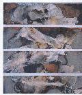

River Mist: New Paintings by David Geiser |
|
|
Some painters prefer to work in an expressionist mode. This is a simple fact.
It is difficult to function expressionistically in today's cool simulationist
art world. Nevertheless, Geiser works this way. His method requires
considerable discipline -- another fact that is sometimes overloooked. There
is the misconception that expressionism is about expressing oneself -- as if
nothing else mattered. Before a painting becomes expressionist, it requires
a motive, an intention, and a clear direction. It requires something from
the artist, a sense of knowing.
Painting -- particularly, abstract gestural painting--is not an image. Here is another great misconception -- that a painting is synonymous with an image; but an image is a representation that comes into being only after the painting has been reproduced photographically. If a painting shows up on a website then it is an image. Otherwise, as a physical object, it is a painting -- a tactile form -- that has the potential to exude significance. In making this latter statement, I realize that it has a lot to do with how Geiser paints and how he thinks about painting, indeed, how he feels about painting. |
 River Mist III, 2000 |
| River Mist refers to new groups of paintings that are composed of horizontal panels. The color is very subtle - earth colors, black and white, maybe a discreet touch of mauve. Why not? Geiser loves to be around nature. He goes to his cabin in the woods and he fishes. He likes the fresh water scent and the isolation, the concentration, and the neccessity to remain altert. The mist from a river happens through the refraction of light. His paintings are therefore an interpretation of this process of refraction. But it is not at all a representation. These panels exist beyond representaion. They have a method -- a serious investigation of color tones and values, of glazes, subtle pours and drips, even subtler manipulation of linear forms and amorphous shapes caught within the essential stillness ofpainting. Geiser wants the work to sing. It does. Look at the earlier "Cenote Series" -- the large circles -- perhaps reminiscent of early sculpture by Richard Serra. The panels -- the parts in relation to the while -- are not incidental to how the painting is structured. They exist of necessity. They are part of what makes the painting significant, what gives the painting its expressive energy. |
Clay Cenote, 1998 |
|
Geiser's work is always on time, always engaged in a process of temporality and transference, transference from the world of nature, the owrld of eternal
struggle, to some wondrous outward manifestation. They are not paintings that project a mood so much as paintings that give vitality and meaning to a oworld tha has (temporarily?) lost its sense of tactile response to the intimate phenomena of everyday life. Geiser's paintings help restore a sense of intimacy to the world--a tall order that only a ptinter who has a vision can achieve. David Geiser is such a painter.
New York City January 2000
|
{kind=link}
{kind=link}